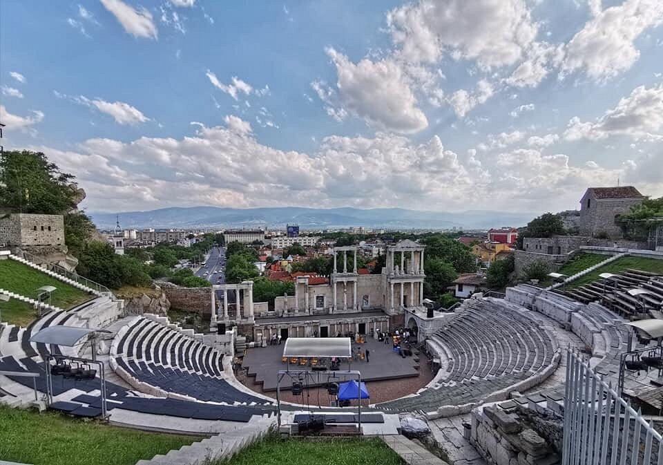
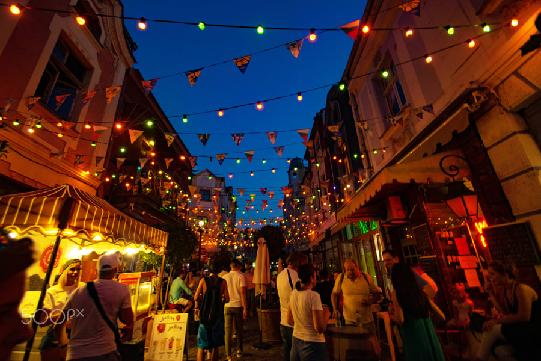
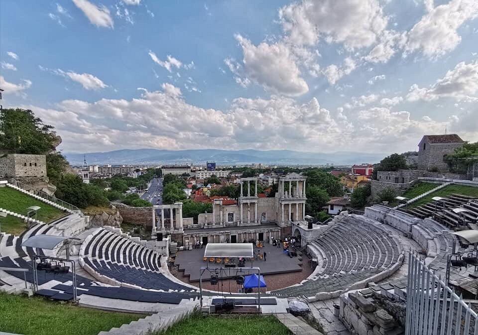
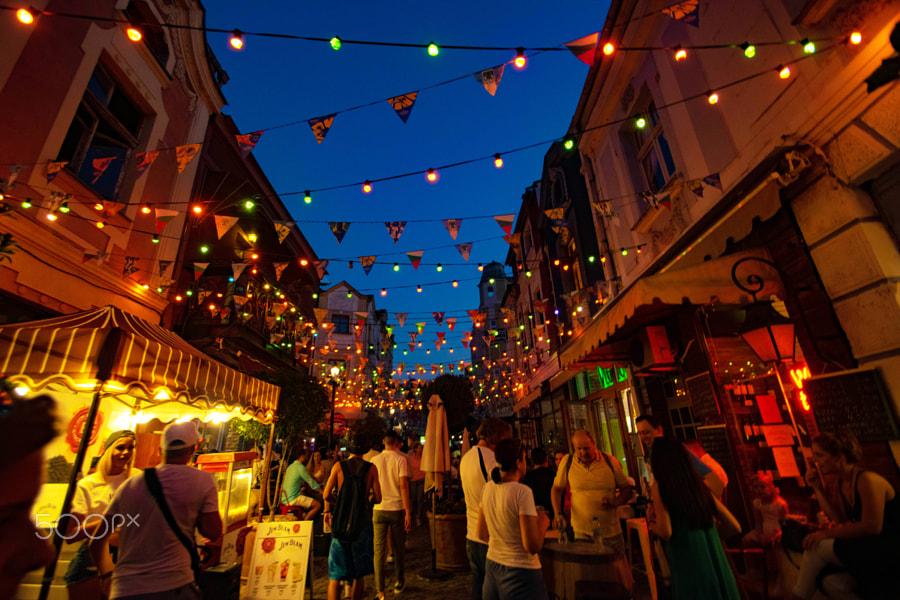

Пловдив - един от най-старите живи градове в света
|  |  |

|

|
| Начало | История | География и местоположение | За нас | Любопитно |
Пловдив - един от най-старите живи градове в света
|  |  |
|
|
Херакъл: Виждате ли, Хермесе и Философийо, две планини – най-големите и най-красивите от всички планини (по-голямата е Хемус, а срещу нея е Родопа), лежащото помежду им плодородно поле, което започва от самите им подножия, и издигащите се три прекрасни хълма, разположени изключително красиво, които съвсем не са безформени в грапавината си, а сякаш представляват множество крепости на лежащия под тях град. Защото вече се вижда и самият град.
Хермес: Кълна се в Зевс, Херакле, най-големият и най-красивият от всички! Наистина отдалече блести красотата му. И една огромна река преминава покрай него, като го докосва съвсем отблизо.
Херакъл: Това е Хеброс, а градът е дело на прочутия Филип. Вече оставяме облаците и доближаваме земята, така че нека слезем наслуки!